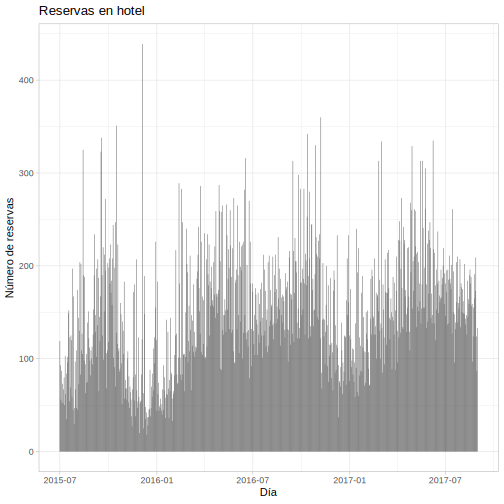
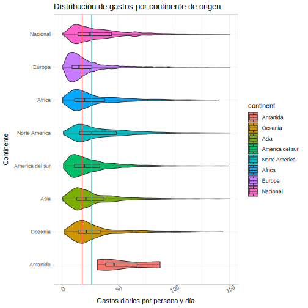
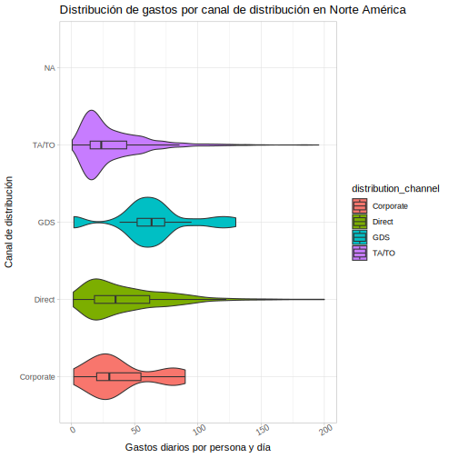

Haremos zoom en base a los datos disponibles para realizar una propuesta de marketing optimizada para aumentar los ingresos en uno de los hoteles turísticos de Portugal.
Para comenzar exploraremos que datos tenemos disponibles: estos son, datos de reservas realizadas en un periodo de tiempo.
Sin embargo estos no nos permiten tener una idea general de la distribución estacional de las reservas, ya que son demasiado granulares. Días festivos y otros acontecimientos añaden ruído. Por esto agruparemos los datos en meses.
Podemos observar que las reservas suben durante el periodo de verano y caen en navidades. Uno de los hoteles es parte de un resort. ¿Puede ser esta idoneidad para verano la que genera estacionalidad?

Parece que no lo es, al contrario, las reservas en el resort se mantienen mayormente estables y son las del hotel en la ciudad las que crecen en verano.
Una vez explorado este ángulo veamos a que clientes podemos orientar nuestra publicidad para optimizar los retornos.
Como comienzo dividiremos los clientes por su continente de origen.

Ya no necesitamos la informació de estación, así que podemos eliminar el eje de gastos totales para observar la proporcion de clientes por continente.

Y podemos realizar una pequeña limpieza de los datos, eliminando clientes de los que no se sabe su origen y una ajuste visual invirtiendo el eje Y.

Ahora podemos pasar a graficar la distribución de gastos por persona para cada continente, que se mantiene bastante similar para los distintos continentes con un pequeño desvío adicional para Oceanía.

Si consideramos en el gráfico de distribución de gastos no solo el gasto por persona, sino por persona y día vemos que América del Norte es el continente donde se da una mediana de gasto mayor, incluso superando ligeramente al turismo nacional que no debe hacer frente a gastos adicionales como el desplazamiento hasta el país.
Por esto nos centraremos en los clientes de Norte América. A continuación exploraremos que canal de distribución es el más eficaz, es decir, el que genera clientes que producen un gasto mayor.
Como conclusión, en cuanto a gastos por persona, lo más eficiente sería potenciar la publicidad alrededor de las plataformas construídas alrededor del GDS (Global Distribution System), sistemas electrónicos que interconectan agencias de viajes, vuelos, hoteles, desplazamientos y demás servicios.
Esta sería la recomendación final que produciría nuestra exploración: potenciar la publicidad asociada a los canales GDS para los clientes de América del Norte.